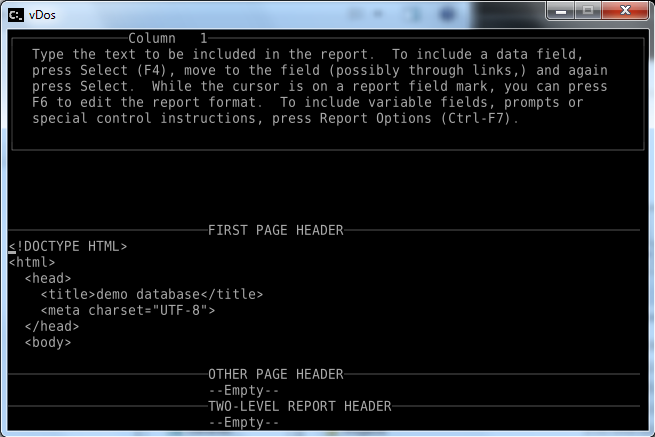

Creating an HTML page from a panel in a DataPerfect database is as easy as writing a report.
For a demonstration,
Using this as an example, create a report in your own database, and use the boiler-plate in the first page header and final footer.
In the report body, select the fields you want in the page. For text fields you'll probably want to use the ;;W print modifier (made for the web).
Report screen shots, showing boiler-plate needed for HTML:
